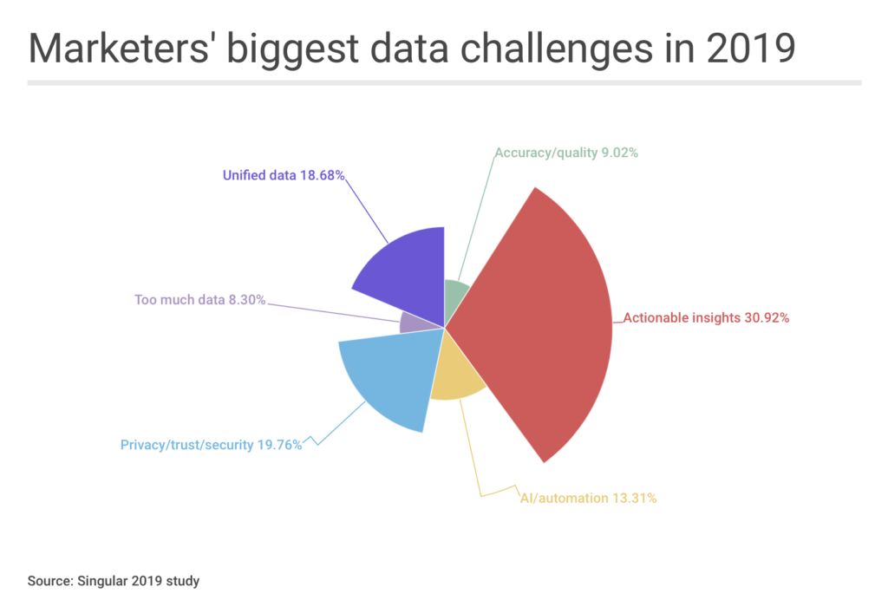

200 CMOs on marketing data: ‘Actionable insights’ are top priority for 2019, followed by consumer privacy
What do brands need most out of their marketing data in 2019?
Actionable insights, consumer privacy protection, and full marketing data unification, chief marketing officers say.
I recently asked 199 CMOs, VPs of marketing, and other marketing leaders what their biggest challenges for marketing data will be in 2019 for a story in Inc. (There was far too much to write there, so this post became necessary.) Tops on marketers’ lists of priorities? Actionable insights in an avalanche of data. But just behind it in today’s climate of consumer privacy breaches was privacy – and trust.
Here’s how Felicity Carson, CMO for IBM’s Watson division, put it:
“Among all the marketing data challenges, the biggest in 2019 will be how marketers instill trust in data – both for the marketing discipline and customers – balanced with the need to improve customer experience.”
The 800-lb gorilla in the room?
Marketers have far too much data already. That’s a consumer privacy risk, but it’s also a potential marketing intelligence nightmare.
“Marketers are drowning in data from various analytics systems,’ says Jo Ann Sanders, VP of Product Marketing at Optimizely. “What marketers are going to have to do going forward … is to go beyond analytics data … and adopt new, agile test and learn practices.”
Marketers don’t need more data.
What they need are actionable insights drawn from the data they already have. Marketers’ third priority, unifying all their marketing data, will help.
“With the exponential growth of data over the past decade and into the new year, it’s becoming harder daily to turn information into action,” says SurveyMonkey CMO Leela Srinivasan. “While more data has the potential to deliver more meaningful insights, prioritizing an action plan to address it is critical.”
Consumer privacy and data security
Insights are essential for growth, that’s clear.
But a strong brand untainted by consumer privacy breaches is also essential for growth. Anyone who feels otherwise, just ask any company that experienced a privacy breach in 2018 … and look at its stock price impact.
That’s why, almost shockingly, marketers’ second-biggest concern has now become consumer privacy, the security of consumer data that brands now possess, and regaining the trust of their customers.
“The single biggest challenge B2B marketers face in the coming year will be balancing privacy and personalization to regain the trust of their audiences,” says Penny Wilson, CMO of social media marketing platform Hootsuite. “That starts with respecting [consumers’] privacy, being open and transparent about when and why data is collected, and then leveraging the data that customers are willing to share to create personalized one-to-one experiences that deliver unique value.”
This requires a massive change in data collection policy.
“Going forward, brands must focus less on maximizing reach, and more on generating transparent, quality engagements that add value to their customers,” Wilson adds.
This is not business as usual for marketers and advertisers, who have typically wanted as much data as possible. In fact, a new “social contract” between brands and consumers will become so important, says Lloyd Adams, SVP at SAP North America, that data ethics will become more important than data analytics.
Unifying marketing data: a top-3 priority
What else do marketers care about?
Not far behind privacy/security/trust, marketers rank unifying marketing data as a top-three priority.
The challenge is obvious.
In a universe of 7,000 marketing and advertising technology tools, marketers are both doing and learning so much more from their prospects and customers. But most of those actions and insights are being generated in siloed, dispersed systems.
“The problem is, we’ve put too many tools in place to collect and analyze marketing data that are too hard to use and it’s causing a lot of frustration,” says Tim Minahan, CMO of Citrix. “Marketing professionals are spending way too much time searching for information and clicking through multiple pages in applications to gather the insights they need to design, execute, and measure effective campaigns.”
The result is not pretty.
“Everyone’s data is a mess,” says Peter Reinhardt, CEO of Segment.
Identifying insights from your marketing data and then unifying them for a single view of customers – and a unified understanding of marketing success – is critical to cleaning it up.
“Data lives in different places — sales, customer service, digital marketing,” says Selligent Marketing Cloud CEO John Hernandez. “The biggest data-related challenge [for 2019] will be consolidation and a full 360-degree view of the customer relationship.”
That’s a difficult challenge, Hernandez says, and CMOs agree.
And in fact, not only is it hard right now … it’s getting harder.
“The biggest issue with marketing data is federating it into a meaningful whole picture,” says Eric Quanstrom, CMO of Cience. “As CMO, I live in (literally) a dozen different dashboards, daily. And that number is growing.”
Marketing data used to be fairly simple: survey data, market data, customer data, product use data, and probabalistic reporting on ad performance in traditional channels. New digital channels offer deterministic reporting possibilities, but with web and mobile and apps and wearables and IoT – to say nothing of platform proliferation like email and social and messaging and search – it’s getting harder.
And all of that proliferation leads to siloed data sets.
The problem with siloed data is that fragmentation subverts complementarity, says Rebecca Mahoney, CMO at MiQ. When data isn’t complementary and doesn’t add up to a complete picture, the marketing results is an inability to detect new opportunities, or see weak links in existing marketing campaigns, she says.
Data lakes may not save marketers, says Daniel Jaye, founder of Aqfer, a data lake provider.
In fact, they can actually exacerbate the problem because most data lakes inevitably become data swamps, Jaye says. Widespread data proliferation, chaotic file partitioning and sharding practices, and the lack of traditional data management tools all cost marketers the opportunity to achieve integrated insights.
Marketing intelligence unifies data insights
But there is hope.
Good marketing data practice does result in growth.
“With a holistic view of data, powered by marketing intelligence, campaign performance will drastically improve, and otherwise unidentified business opportunities will become unlocked,” Mahoney says.
It’s true that not every marketer will have a single marketing cloud for all their marketing technology and data needs. And even most marketing cloud customers also use additional tools to engage and understand their customers.
That suggests that centralization of marketing insights, particularly on paid but also on organic marketing efforts, is what will help marketers the most. Engagement happens where the customers are and data lives in the tools a brand uses to connect with them. Marketing intelligence aggregates then insights from the entire gamut of customer engagement into one single unified view.
Other top concerns: quality, quantity, and AI
Marketers are also concerned about the quality of the data that they have, and its accuracy. 13% said that accuracy was a top concern in 2019. Another 12% said they have too much data.
“In many ways, marketing has too much data on its hands,” says David Meiselman, the CMO of corporate catering company exCater.
As Citrix CMO Tim Minahan said above, we’ve put too many tools in place to collect and analyze marketing data. The result is frustration.
A potential savior?
Artificial intelligence.
“We … believe marketing and customer engagement will be an excellent first use-case for enterprise AI,” says Patricia Nagle, CMO at OpenText. “AI systems can analyse structured and unstructured data to identify opportunities for marketing outreach, customer support, and other actions that enhance overall customer experience.”
That’s true, and AI is a tool that marketing is already seeing results from in fraud reduction, creative reporting, and other areas.
But it does some with some dangers as well.
“Deep learning models have been shown to be vulnerable to imperceptible perturbations in data, that dupe models into making wrong predictions or classifications,” says Prasad Chalasani, Chief Scientist at MediaMath. “With the growing reliance on large datasets, AI systems will need to guard against such attacks on data, and the savviest advertisers will increasingly look into adversarial ML techniques to train models to be robust against such attacks.”
And finally … all the other quotes
When you ask 200 top marketers for their insights, you get a lot of insights. And they’re too good to bury.
So here are many of the additional quotes that marketers provided, broken down into categories that I’ve chosen. Some of them are partially referenced above, but are given in complete form here. Each of the responses is answering a simple question:
What are brands’ biggest challenges with marketing data in 2019?
Marketers need: Data accuracy and quality
Peter Reinhardt, co-founder and CEO of Segment
The biggest challenge for marketing data in 2019 will be data correctness. Everyone’s data is a mess. Consumers are bombarded with tons of noise, much of it based on wrong data, names, and locations. As a result, customers are burned out. It doesn’t matter how much a company invests in personalization if the underlying data is incorrect. For businesses to truly succeed in 2019 and beyond, they need to prioritize making sure their data is clean and accurate.
Martha E Krejci, The Tribefinder
The biggest challenge with marketing data in 2019 will be determining how good the data really is. Before this rise in cookie awareness people weren’t really flushing the cookies or clearing their cache as much, which lent itself to long-standing good demographic data. Now, the data isn’t as deep, therefore not as reliable. In 2019, businesses will need to learn to re-target.
Joanne Chaewon Kim, Junggglex
Not surprisingly, war against fraud will be the biggest challenges mobile marketers will have to face. In addition to common fraud cases like SDK spoofing and click spamming, more and more new types of fraud will stop developers from obtaining real users. Our job as mobile marketers is to keep educating ourselves about different types of fraud and the pattern of each fraud cases, so that we can take a proper action when we find them.
Marketers need: Actionable insights and marketing intelligence
Mark Kirschner, CMO, Albert
The best tools solve the disconnect between data, insight, and action, incorporating multiple sources of data to execute, allocate, attribute and optimize digital campaigns across channels.
Tara Hunt, CEO + Partner, Truly
Marketing data still struggles with insights and it would be amazing to see more of a focus on this essential craft. There are endless tools for gathering the WHAT – numbers and histories and basic information about your customers – but very little that helps us figure out the WHY. The big challenge in 2019 (and likely for a few more years) is going to be training people to understand how to read the what to get to that why.
Phil Gerbyshak, Digital Selling and Marketing Strategist
With all the data collected, the biggest challenge with all the marketing data is finding the most meaningful data, and then figuring out the most actionable insight from that meaningful data. Too often reports for reports sake are created, even with AI to help us find the patterns. Taking the time to think about what you want to accomplish and setting up your data accordingly will challenge marketers and delight stakeholders in 2019 and beyond.
David Berkowitz, Principal, Serial Marketer
There is so much data out there that ‘big data’ is no longer the priority; there is a need for actionable data that means something to marketers. The other challenge is that the biggest winners on the platform side are increasingly closed and stingy with their access, which may be necessary for consumers and benefits the platforms but hurts marketers. Finally, marketers will have to grapple with a savvier base of consumers who are constantly reading mainstream press coverage about data abuses; marketers will need to determine how cautious they want to be with collecting and accessing consumer information.
Douglas Karr, CEO, DKnewmedia
What is the biggest data challenge for marketers in 2019?
Building actionable results based off of accurate data. We continue to see an inability of our clients to properly read analytics and come to assumptions. I hope continued AI and machine learning will add tools to assist.
Felicity Carson, CMO, IBM Watson Customer Engagement
Among all the marketing data challenges, the biggest in 2019 will be how marketers instill trust in data – both for the marketing discipline and customers – balanced with the need to improve customer experience by identifying meaningful patterns buried deep within the deluge of data. Compounding this challenge is the need to break down compartmentalized martech and adtech stacks that house this information, coupled with the need to have contextualized understanding of aggregated customer data across the organization such as commerce and digital teams. Marketing teams will need to rely on AI to achieve this level of high performance at scale, particularly in the new era of the ‘Emotion Economy’ that requires organizations to engage with customers in relevant ways on issues that personally matter to them.
Julie Huval, Beck Technology
The biggest challenge with marketing data in 2019 will be to decipher which of the outlier [datapoints] are leading indicators into new market growth.
Leela Srinivasan, CMO of SurveyMonkey
Today, we have access to more data than ever before, but with the exponential growth of data over the past decade and into the new year, it’s becoming harder daily to turn information into action. A study by IDC bleakly projects that by the end of 2025 only 15% of global data will be tagged; of that, only 20% will be analyzed and approximately 6% will be useful.
While more data has the potential to deliver more meaningful insights, prioritizing an action plan to address it is critical. In 2019, B2B marketers will be laser-focused on finding a way to cut through the massive troves of data available and identify the insights that matter most.
Christina Warner, Walgreens Boots Alliance
The biggest challenge with marketing data is the ability to find the useful insights to create concrete actionable next steps. We have so much data, but not enough of an efficient way to sift through the noise accurately for truly useful data.
Lauren Collalto-Rieske, CMO, Contap Social
The biggest challenges we have as a startup are: having easy-to-use data that doesn’t require a ton of training like a Nielsen or IRI platform and being able to triangulate all of our data among a two-person team. Right now, we are using about 8 different vendors to analyze one or more stages within the customer lifecycle, and while it’s great to have all of this data, it’s not easy to triangulate it. It would be great to have 1 platform that could assess all or most of our marketing program’s performance, but those platforms usually come with a large price tag that we can’t afford.
Moshe Vaknin, CEO and CO-Founder, YouAppi
One of the biggest challenges marketers will face in 2019 is how to better analyze consumer behavior and turn those insights into effective marketing. Consumers spend 40 hours a month and three hours a day in apps, mobile time spent will surpass time spent in TV in 2019, so marketers need to change their traditional planning behaviors for this brave new world. They must integrate their traditional teams with their digital teams, combine their video teams into one cohesive team, and integrate the data across all channels so that they can be smarter about how they find their most valuable customers. It is also getting harder with privacy, however, companies with strong technology especially predictive algorithms can predict users intentions based on less data. We are just scratching the surface on data analysis and with new data privacy laws, this challenge will only get harder.
Tim Minahan, Chief Marketing Officer and SVP, Citrix
Every marketing challenge can be whittled down to a mathematical equation – whether it’s measuring customer sentiment, tracking conversions, or weighing the return on a particular campaign. Data-driven marketing can eliminate much of the he-said/she-said friction that has historically muddied sales and marketing relationships. It can cut through emotional biases and drive the right course of action to reach and win the market and deliver the best results. The problem is, we’ve put too many tools in place to collect and analyze marketing data that are too hard to use and it’s causing a lot of frustration. Marketing professionals are spending way too much time searching for information and clicking through multiple pages in applications to gather the insights they need to design, execute, and measure effective campaigns.
To tackle this problem, marketing organizations need to tap into intelligent technologies like machine learning that can make data-driven marketing smarter and easier to execute. Machines can recognize patterns and analyze things with greater speed and efficiency and automatically deliver insights and intelligence that humans can use to make more informed decisions and engage customers and prospects in the most optimal way. And beyond tools that automate tasks and make marketing more efficient, we need to equip our teams with solutions that enable them to push the envelope. Like using artificial intelligence and machine learning to see data in new and innovative ways. Or leveraging augmented reality to create entirely new worlds where we can interact with customers in insanely personal ways.
Julia Stead, VP of Marketing, Invoca
As marketing tools and automated solutions continue to flood the market, the biggest challenge marketers will face is applying data to create timely, emotionally-reciprocal experiences. More and more consumers desire a human to human connection and want to communicate with an empathic human rather than a bot or an algorithm. The year ahead will be a pivotal milestone for marketers and brands, the ones that use their data to better understand consumer behavior and leverage it to create more personalized, human connections will succeed, while the ones that do not will risk losing loyal customers.
Tirena Dingeldein, Research Director, Capterra
In 2018, if you’re a marketing professional that listened to recommendations of marketing experts everywhere, you collected a lot of customer data and used it to formulate campaigns. The problem of moving marketing forward into 2019 is two-fold; security and recognizing changes in data before solid patterns are defined. Data security, obviously, will be most important for maintaining trust between marketing and their audience, whereas recognizing emerging patterns in the data deluge will mean the difference between cutting-edge marketing or just ‘catching up’ marketing in the new year.
Sid Bharath, growth marketing consultant for tech startups
The biggest challenge with marketing data is figuring out what signals to pay attention to and how to prioritize them. With an explosion of data, the bottleneck moves to how fast you can execute on what the data tells you, and unless you have unlimited resources, you need to prioritize them.
Kent Lewis, Anvil Media
The biggest challenge with marketing data in the coming year will be gaining actionable insight from a flood of data generated via a diverse and numerous set of online (and offline) channels, including social media, website, email, events, PR and advertising.
Daniel Raskin, CMO, Kinetica
The Marketing Data Scientist will be focused on deriving detailed insight about customer behavior and producing reliable predictive and prescriptive insights based on complex data models and machine learning. These models will evolve from historical analysis into real-time applications that transform how products are delivered to customers.
Gennady Gomez, Director of Digital Marketing, Eightfive PR
As marketing data becomes not only more accessible but also much more bountiful, there will be an exponential increase in analysis paralysis. As a result, we’ll start to see the focus in martech shift from data mining to insights reporting, driven by data science and machine learning. These new breed of tools will be critical for marketers as they sort through, identify, and filter actionable data.
Jordan Bishop, Partner, Storied Agency
Until our ability to glean insights from all this data catches up to our ability to capture it, we’ll face the same issue as a city with plenty of cars and not enough roads: traffic. Don’t confuse having more data with having more insights.
Marketers need: Unified data
John Hernandez, CEO, Selligent Marketing Cloud
The biggest data-related challenge will be consolidation and a full 360-degree view of the customer relationship. As it stands, data lives in different places — sales, customer service, digital marketing — and migrating it into a single platform and making sense of it all is going to be difficult. I hope that in a year’s time, we’ll see a lot of progress and proof that leveraging data to focus on delivering personalized, more relevant experiences is the optimum path for better engagement, stronger sales pipelines, and more meaningful marketing results.
Latane Conant, CMO, 6sense
Emerging technology has improved marketing strategy, but the challenge marketers are facing is the daunting task of managing a large number of applications. In the next year, more CMOs need to take a platform approach. Investing in a platform that can be integrated into an existing CRM allows organizations to easily unify their revenue teams, and with the addition of AI incorporated into the platform, unified teams have insight into the behavior of modern buyers with the use of real-time data.
Meisha Bochicchio, PlanSource
Connecting the dots between marketing touch points and giving proper attribution has been and will remain a major challenge for marketers in 2019 … it can be hard to get a full 360-degree view of the true marketing and sales funnel … it is still nearly impossible to combine data from multiple touch points … to paint a full picture of marketing efforts and sales results.
Dietmar Rietsch, CEO, Pimcore
Many marketers have so much data from multiple domains on hand, but no way to streamline and manage it in one centralized location to gain valuable insights.
Eric Quanstrom, CMO, Cience
The biggest issue with marketing data is federating it into a meaningful whole picture. As CMO, I live in (literally) a dozen different dashboards, daily. And that number is growing.
Daniel Jaye, Founder, Aqfer
2019 will be the year enterprises discover that serverless data lakes are a thing, and that they inevitably become data swamps due to widespread data proliferation, chaotic file partitioning/sharding practices, and the lack of traditional data management tools. As marketers are still floundering to piece together the data and figure out whether or not campaigns truly succeeded—they will realize that they can’t keep their heads in the sand on data any longer, and must work to get a better grasp on data management in order to get to the truth about their customers.
Kelly Boyer Sagert, Dagmar Marketing
The biggest challenge will be how to tie all the data together to clearly identify what marketing channels are working or not working. There are multiple touch points to a buyer’s journey and it’s very common to see multiple marketing channels involved in the buyer’s decision, which makes it hard for analytics tools to attribute accurately what marketing channel contributed the most.
Amanda Romano, Twenty Over Ten
The biggest challenge in 2019 will be the ability to bring together … multiple sources of data to connect the dots, make informed decisions and act quickly on those insights.
Aman Naimat, CTO, Demandbase
The marketing technology landscape is increasingly fragmented and that’s not going to slow down. But marketers will need to find a solution to stop isolated data sources from negatively impacting their marketing capabilities in 2019. By integrating key marketing technologies such as CRM, marketing automation and ABM platforms, marketers can start to share data across these applications and get the complete customer view that they crave.
Rebecca Mahoney, CMO, MiQ
Businesses have a wealth of valuable marketing data available to them, but complications arise when this data remains in siloes pertaining to the different departments within that business. This prevents the data from being complementary, and businesses cannot detect potential weak links or new opportunities. With a holistic view of data, powered by marketing intelligence, campaign performance will drastically improve, and otherwise unidentified business opportunities will become unlocked.
Brian Czarny, CMO, Factual
In 2019, marketers will be faced with the challenge of data implementation. Marketers know how valuable data is, but struggle to make sense of it as they’re faced with the challenge of navigating numerous fragmented platforms and systems to get accurate and quality data. The goal is to gather data from multiple sources that work together to achieve optimum success, but there isn’t one standard way to streamline data. Eventually, unlocking this will give marketers the capability to improve context, relevance, and develop creative that resonates.
Eric Keating, VP Marketing, Zaius
The key is to centralize … data and connect every interaction to a single customer ID. Then you can actually understand how your customer behaves across channels and devices. But even more importantly, that data has to connect to your marketing execution platforms directly, so you actually use those insights to power your marketing.
Marketers need: AI and machine learning
Prasad Chalasani, Chief Scientist, MediaMath
The increase and abundance of data that is available now due to integrated marketing platforms will demonstrate the flaws in various deep learning models. Deep learning models have been shown to be vulnerable to imperceptible perturbations in data, that dupe models into making wrong predictions or classifications. With the growing reliance on large datasets, AI systems will need to guard against such attacks on data, and the savviest advertisers will increasingly look into adversarial ML techniques to train models to be robust against such attacks.
Pini Yakuel, CEO and Founder, Optimove
Marketers are equipped with more consumer data than ever before, which can give them valuable insights into their customer base. Many are eager to use AI to automate and personalize communications, but lack the proper infrastructure and data know-how for AI to work properly. There are countless marketing AI platforms available, but until brands are able to properly segment their datasets and make their data truly work for them, they won’t have the ability to conduct innately intelligent marketing. What does this kind of marketing look like? All the marketer needs to do is set the framework, and the AI takes it from there to create personalized messaging for consumers. In 2019, we can expect to see a push from brands to organize their data within a framework that allows them to hyper-personalize communications.
Patricia Nagle: Senior Vice President, CMO, OpenText
Analytics continue to be a critical way to review the impact of marketing on business objectives. In 2019 the continued adoption of dashboard reporting and analysis systems will improve how we measure marketing programs and tactics. With better understanding of all marketing functions, organizations can take a more strategic approach and focus on what’s performing best. We also believe marketing and customer engagement will be an excellent first use-case for enterprise AI. AI systems can analyse structured and unstructured data to identify opportunities for marketing outreach, customer support, and other actions that enhance overall customer experience.
Jonathan Poston, Director, Tombras
We are collecting and analyzing real time data using AI powered platforms … we are telling the story, giving shape and voice to the billions of data points that would otherwise be a bottomless inkwell of unrealized potential.
Brandon Andersen, Chief Strategist, Ceralytics
Marketing data and insights [will become] cheaper due to marketing AI platforms. It will no longer take big budgets, multiple data vendors, and a team of analysts to get actionable insights.
Marketers need: Data security, consumer trust, privacy
Lloyd Adams, SVP, SAP North America
Data ethics will become more important than data analytics.
Jeremiah Owyang, Jessica Groopman, Jaimy Szymanski & Rebecca Lieb, Kaleido Insights
In 2019, marketers will struggle with the social contract of data exchange between consumers and brands. They’ll wrestle with these questions: How will users be compensated beyond personalization? How can marketers do this without being “creepy”? And, as more biometric data emerges, how can marketers use in an ethical manner?
Augie Ray, Director, Gartner
Making better and more critical decisions about what to collect, how to protect it, how to combine it, and how to use it. The idea of a “360-degree view of the customer” has encouraged brands to collect as much data as possible, but this should never be a goal because it raises risks such as privacy concerns, data breaches, GDPR compliance, and customer distrust. Marketers and customer experience leaders need to focus on prioritizing their data needs, better assessing risks, and developing a data strategy that prioritizes and centers on what data is essential and how it will be used over accumulating more of it.
Penny Wilson, CMO, Hootsuite
The single biggest challenge B2B marketers face in the coming year will be balancing privacy and personalization to regain the trust of their audiences. In many ways, 2018 was a tumultuous year for brands, marketers, and customer experience leaders. Concerns around fake news, fake followers, and data privacy led individuals to question their trust in politicians, media outlets, social networks, and businesses alike. Those same concerns extended to how brands — both B2C and B2B — forge relationships with customers, and the data they use to do so. The priority for B2B marketers in 2019 must be to reassure customers – and their customers’ customers – their data is safe and secure. This has to be achieved in the changing climate of customer expectations. Increasingly customers — be they businesses or individuals — are expecting content that is important, interesting and timely to them. That starts with respecting their privacy, being open and transparent about when and why data is collected, and then leveraging the data that customers are willing to share to create personalized 1:1 experiences that deliver unique value. Going forward, brands must focus less on maximizing reach, and more on generating transparent, quality engagements that add value to their customers.
Mike Herrick, SVP, Urban Airship
The biggest challenge marketers will face in 2019 is activating their first party data and growing its use. Brands are facing a privacy paradox as customers increasingly expect personalized service, but both data regulations and consumer privacy controls whittle away at third-party data and tracking. To remain compliant and provide great customer experiences, brands will increasingly rely on data customers willingly provide in the course of direct interactions across engagement channels–websites, apps, messages, social and in-store interactions and more. The best brands will go beyond gaining opt-ins, subscriptions and followers, and use these interactions to collect context and content preferences for each individual.
Tifenn Dano Kwan, CMO, SAP Ariba
A greater focus needs to be on being data compliant as well as on the ease of leveraging data.
Kedar Deshpande, VP, Zappos
The biggest challenge with marketing data stems from the fact that marketers have so much data available to them today, which they’re able to use to reach customers in a very precise way, yet there’s currently a huge lack of communication between brands and customers as to how and why that data is being used. Without more transparency with customers around why personalized outreach is happening and how it’s benefiting them, the immediate reaction is one of distrust, uncertainty, and even fear or anger. In 2019, brands need to focus on clear messaging that explains to customers why they’re using personalization tactics, how their privacy is protected, and what they stand to gain from it.
Briana Brownell, CEO, PureStrategy
With ad-blockers becoming ubiquitous and privacy concerns reaching a fever pitch, marketers need to rebuild the trust that has been lost with consumers. Some of the most successful marketing campaigns in recent times have been honest and authentic, sometimes to the point of distress: KFC’s apology for running out of chicken and Nike’s partnership with controversial quarterback Colin Kaepernick. The biggest challenge in 2019 and beyond will be to create a new normal between marketers and consumers.
Len Shneyder, VP, SendGrid
May 25, 2019 will mark 1 year since GDPR came into force in the EU. This privacy law sets concrete standards on how EU citizen data has to be treated in addition to strict guidelines on consent. Successful senders will have taken stock of this law and enacted internal processes to ensure compliance with European law.
Ben Plomion, CMO, GumGum
As data protection regulations like GDPR become increasingly prevalent in 2019, marketers will struggle to target customers with individually customized online advertising. The most successful marketers will be those who can deliver individualized experiences, without individual user data. Computer vision and other contextual analysis technologies will be necessary to anonymously align ads with the likeliest potential customers.
Esteban Contreras, Senior Director, Hootsuite
We have more data than ever before in history and that in itself is a challenge. One of the most important problems to overcome is how to effectively handle and leverage data – data engineering, data analysis and data science – with legitimate consumer empathy. We need to consider privacy by design. The ethical use of big and small data is ultimately about creating value (e.g. personalizing and contextualizing experiences) without misleading or dehumanizing anyone.
Marketers need: Less data (or at least, smarter data)
Alyssa Hanson, Intouch Insight
The biggest challenge with marketing data will be having too much of it, specifically for B2C organizations.
Marketers crave access to information, but we’re drowning in a virtual quagmire of data. We want to get granular, digging deeper into every data point, but we’re stuck with analysis paralysis — unable to prioritize actions that will have the greatest impact on our KPIs.
Marketers will need a cutting-edge customer experience platform that recommend strategic actions tied to specific KPIs.
Hillel Fuld, Strategic Advisor
Noise. There is a lot of it and it is increasing exponentially. As data volumes increase, the tools we will need to filter it all and extract the valuable components will have to increase in their abilities accordingly.
Tom Bennet, Head of Analytics, Builtvisible
The sheer volume of data being collected is itself posing a challenge to marketers. As we move into 2019, the ability to separate out meaningful patterns and relevant trends from the vast quantities of background noise will be a real test for many marketing teams.
Neil Callanan, Founder, MeetBrief
Because there’s just more and more data with disparate KPIs coming from different sources, the biggest challenge will be in deciding what to ignore and what to value.
Alicia Ward, Flauk
I predict a big challenge for marketers in 2019 will be remembering to use data as only part of the story and keep an eye on the bigger picture. How many times have any of us been hit with poor targeting because of something else we’ve liked or clicked on? It will be important for marketers to remember that the people they are marketing to are real, complex people who should be considered as more than just a few data points.
Matt Hogan, Head of Customer Success, Intricately
The biggest challenge for marketers is focusing on the data that matters. There is a lot of noise out there and each team member needs to know which data is significant to their success. But, it’s not just about having the data but putting it into context to make strategic revenue-driving business decisions. If you aren’t able to execute on your marketing data, it is useless.
Zachary Weiner, CEO, Emerging Insider
I think the core problem moving into 2019 where marketing data is concerned is that with ever increasing amounts of data, marketers are still looking at each marketing silo individually or in small affiliated clusters as opposed to cross-analyzing insights across the entire marketing, sales and customer service value-chain. Often silo based marketing teams will look individually at social data, demand-gen, PR, sales and customer service rather than studying where they intersect and interact. This has always been faulty and is continuing to be a greater problem as each and every silo continues to yield more data.
Jo Ann Sanders, VP of Product Marketing, Optimizely
The biggest challenge marketers will face in 2019 is getting access to the right data to know definitively what their digital users want. Marketers are drowning in data from various analytics systems that provide a historical view of the past. They then ideate ways to improve based on this past data, spend resources to deploy updates, and then re-measure to see if their ideas worked. This process of guessing at what will improve conversion metrics can take weeks or months.
What marketers are going to have to do going forward to succeed so they can keep pace with rapid innovation is to go beyond analytics data that tells them where they have been and adopt new, agile test and learn practices. This will take the guesswork out of what users want, and better ensure that they are rolling out winning user experiences quickly.
With the proliferation of marketing data the challenge will be how to use the latest tools to narrow 1000 points of data down into the few key quality ones that are needed to improve business operations and to better communicate with your customer.
David Meiselman, CMO, exCater
In many ways, marketing has too much data on its hands. The challenge is to figure out which data helps the most to optimize targeting, messaging, and conversions. Traditionally, marketers would work their way through countless A-B tests to determine what works. Today, machine learning and artificial intelligence is helping us accelerate that process to detect correlations and causal factors to improve marketing outcomes across the board, from which people to target for highest conversion to what message to send when for greatest effect.
Tim Minahan, CMO, Citrix
The problem is, we’ve put too many tools in place to collect and analyze marketing data that are too hard to use and it’s causing a lot of frustration. Marketing professionals are spending way too much time searching for information and clicking through multiple pages in applications to gather the insights they need to design, execute, and measure effective campaigns.
Matt Buder Shapiro, Founder & CMO, MedPilot
For many years we’ve been trying accumulate as much data as possible, and we’re now ironically in a difficult position of potentially having too much data. We need to remember to sit back and discover what is actually happening at different points in time, so that we can figure out how it all fits together. We also can never forget that the most important data point when building attribution is still “Where did you hear about us?”
Marketers need: Many more things
These quotes don’t fit an exact category. But they’re too good to not use.
Jenni Schaub, Strategic Planning Director, DEG Digital
But always still remember, a mountain of data is not a replacement for empathy
Stephanie Smith, Co-Founder and President, MOJO PSG
Thoughtfully exploring and formulating the question you’re actually trying to use data to answer is a key challenge that marketers must face in 2019. Without taking the time to define the problem we’re solving for, we end up wasting a lot of time swimming in seas of data and even potentially misusing the data we uncover. Marketers must also find a balance between using data to inform, rather than dictate, decisions, as the marketing craft will always be a blend of art and science.
Scott Gifis, President of AdRoll Group
Measurement is hard. For SMBs and mid-market companies, it is harder, and the stakes are often higher. Although last click measurement is an archaic way to measure performance and impact, many marketers still rely on it because they don’t see accessible alternatives, as sophisticated tools are often difficult to set up or not flexible enough to work within their data model.. Yet, marketers are hungry for change and searching for a better way to provide visibility and optimize their campaigns. I see 2019 as the year modern marketers stop relying on vanity metrics and outdated measurement models and start looking at what is actually driving sales. Further, marketers need to embrace multi-channel adoption and prioritize creating connected stories across all touchpoints.
Norman Guadagno, Head of Marketing, Carbonite
The biggest challenge for marketers will be navigating the evolution of what marketing is in a post-truth world. In 2019, marketers will need to ask themselves the difference between truth and propaganda.
Summary
Thanks to all the marketers who participated in this research, which was initially for my column in Inc, but grew beyond that.
Clearly, there’s a significant change in marketing data policy coming. Marketers know that it’s not about quantity of data but quality. They also know that insights on next best actions is the thing they need their data to reveal. And they are more than cognizant now that consumer privacy matters, and companies that violate their customers’ and prospects’ trust do get punished, both financially and in reputation.
We have to give the last word to Jolene Rheaulot from The Bid Lab.
She said this, which every marketer should remember:
The biggest challenge with the breadth of marketing data available to a company is to keep the data human.
. . .
. . .
Looking for a platform to unify your marketing data and derive smart insights on how to grow?
Get a demo and see if Singular is for you.

Stay up to date on the latest happenings in digital marketing